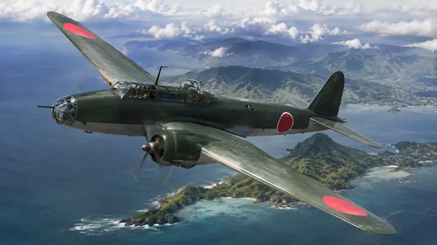

SB2C operations · 1943–1945
The SB2C Helldiver was the late-war successor to the SBD Dauntless. Its reputation was mixed, but by 1944–45 it was heavily used from US Navy carriers for strikes against Japanese bases, shipping, airfields and land targets. A good model starts with the variant and campaign: early SB2C-1, improved SB2C-3/4, late SB2C-5, tri-colour carrier aircraft, Gloss Sea Blue late-war machines or Marine land-base aircraft.
Role & strengths
- US Navy late-war carrier dive bomber and strike aircraft
- Philippine Sea, Leyte, Formosa, Iwo Jima, Okinawa and home-island strike routes
- Internal bomb bay, perforated dive brakes, rear gunner, folding wings and big carrier stance
- Tri-colour Navy camouflage, Gloss Sea Blue and late-war stars-and-bars
- Carrier deck scuffing, salt fading, exhaust staining, oil, bomb-bay grime and coral/island dust
Key theatres
- Central Pacific carrier operations
- Philippine Sea and Leyte Gulf strikes
- Iwo Jima and Okinawa close-support routes
- Marine land-base and post-war/survivor reference routes
Specification SB2C-5
Survivors today

Surviving Helldivers are useful for dive brakes, internal bay, cockpit framing, rear gun, landing gear, wing fold and late-war Navy finish checks.
View survivorsTimeline highlights
Build this SB2C as…
Pick variant and campaign first. Early SB2C-1 aircraft, improved SB2C-3/4 carrier machines, Gloss Sea Blue SB2C-5s and Marine land-base aircraft all need different finish and weathering choices.
Aircraft identity
SB2C-1, -3, -4 and -5 aircraft differ. Check prop, cowl, windows, tail, armament, racks and markings before committing.
Tri-colour and Gloss Sea Blue Helldivers weather differently. Do not treat late GSB aircraft like early blue-grey carrier aircraft.
Paint scheme cards
SB2C-3/4 carrier route with sun fading, salt, exhaust and deck wear.
Late SB2C-5s need subtle gloss variation, exhaust and operational scuffing.
Marine routes can use coral dust, heat, oil and rough-field grime.
Weather dive brakes, bay doors, underside, tyres and walkways as separate surfaces.
Campaign cards
SB2C-1 route with teething-problem context, tri-colour finish and careful variant checks.
Carrier strike route with late-war Navy markings, deck wear and ordnance-heavy missions.
Close-support route with heavy operational use, exhaust, oil and bomb-bay grime.
Land-base and reference routes for additional weathering and structural detail checks.
Build difficulty and related guides
High. Cockpit, dive brakes, bay doors, folded wings and big carrier stance need planning.
High. Dive brakes and internal bay must look crisp or the model loses its Helldiver identity.
High. Tri-colour, Gloss Sea Blue, carrier deck and Marine land-base routes all differ.
SB2C Helldiver carrier and Marine units
Sortable SB2C unit cards covering late-war carrier bombing squadrons, Philippine Sea, Leyte, Okinawa, Marine land-base routes and survivor/reference routes.
SB2C Helldiver operating map
Airfield info
Click a marker to show linked SB2C unit cards and modelling notes.
Campaign timeline
Survivors
Books and reference sources
SB2C Helldiver build guide
SB2C Helldiver videos, photos and archive material
Media replaces the old separate walkaround tab: cockpit, exhaust, undercarriage, markings, survivor references, archive imagery and video cards are grouped here.